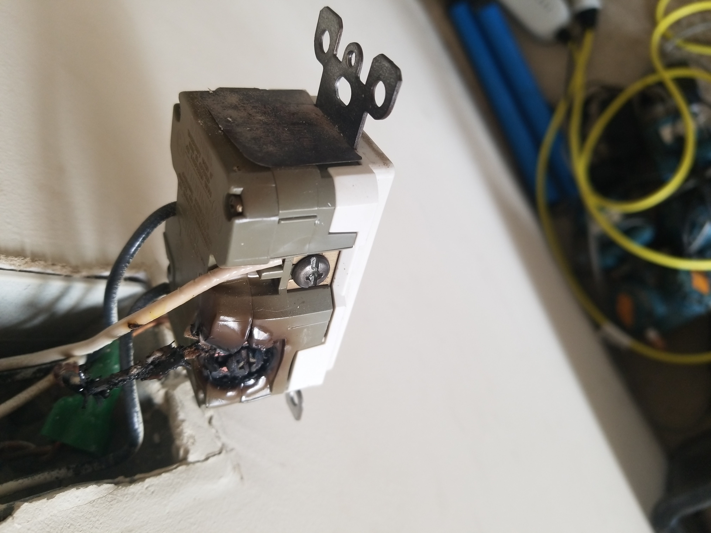
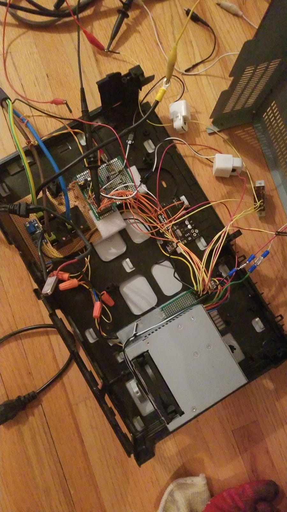

Intro
My parents got an electric car, and those things apparently need charging. This tells the story of how I built a fully custom Level 2 electric vehicle service equipment (EVSE aka EV charger) from scratch for (technically) less than $200 (cost of the plug and a few electrical terminals, I had everything else in my parts bin).
Problem/Inspiration
We only had a Level 1 charger when we first bought the car. It's slow, but it was manageable because we didn't drive very much-- unless my parents had to drop me off at college. The round trip of 100 miles would require 3 consecutive nights of charging to fully replenish the battery.
Why didn't we want to install a Level 2 charger immediately? There was another problem. Our house only had a 100A service, and the electrical panel was completely full. Getting a Level 2 EV charger installed would require a complete service upgrade on top of buying
an Level 2 EVSE, setting us back almost $5000. Suddenly, Level 1 charging seemed like a very good idea...until one day I noticed the GFCI outlet that we typically use to charge the EV was no longer tripping when I tested it. I opened the outlet and found a nasty surprise.

And that's why using the quick-connects on the back of outlets is no longer allowed by the NEC. After that close call, I replaced the outlet and the burnt wire and decided that we needed a Level 2 charger...fast. And I had a plan.
The Process
The plan was simple:
1. Research how the J1772 protocol works.
2. Build an EVSE with a special switching circuit inside that can switch the 240VAC mains between the EV and the central air conditioner compressor.
3. Mount everything up and make sure all connections are secure.
Yea, easier said than done.
The J1772 is simply a +12V/-12V PWM signal whose duty cycle gets adjusted based on the available amperage. Simple enough.
The EVSE itself can be broken down into five major modules:
1. Pilot signal generator (lets the EV know how much current it can safely draw)
2. Safety circuitry (GFCI and ground detection)
3. The relays (to switch the power)
4. Communication (to negotiate with the central air controller for power)
5. Power (to power the circuitry)
Project Speedrun:
- Pilot signal generator: typically done with a rail-to-rail op amp, but I don't have any of those. So I built a isolated half-bridge circuit instead using transistors and optocouplers salvaged from a
washing machine and old VCR players.
- GFCI and ground detection: Current clamp + op amp circuit attached to the Arduino's external interrupt (highest priority). Ground detect is achieved with a variation of the transistor non-contact voltage testers: pulls Arduino pin to GND every time a voltage is detected.
- Relays: A trio (one for L1, L2, and GND) of 40A single pole double throw (SPDT) relays salvaged from a
UPS. The coil voltage for these relays is 24V, so I used a boost converter module to ensure these guys got enough voltage.
- Comms: A pair of ESP-01S boards running ESPNOW for communication (one in the EVSE, the other in the
thermostat).
- Power: A desktop ATX power supply supplying high-current 3.3V for the ESP-01S, 5V to the Arduino, 12V for pilot HIGH and powering the boost converter that drives the relays, and -12V for pilot LOW.
Shoving everything in an old VCR player enclosure...man I really wished I made a proper PCB for this.

Here's how I'm able to pull this off without overloading my electrical service:
Mains power will travel to the COM (common) terminal of the relay, the AC compressor will get hooked up to the NC (normally closed, so default) terminal, and the EV charging plug will get wired to the NO (normally open) terminal. If the EV wants to charge, the EVSE has to first let the thermostat know that it wants to charge (via the ESP-01S). If the AC is currently running, the thermostat will not respond, and the EVSE will wait.
When the AC compressor turns off, the thermostat will notify the EVSE that it is safe to turn on, and only then will the relays click over to allow the EV to charge.
This system has both hardware and software redundancy to make sure nothing goes wrong. Consider the following cases:
1. Communication between the two systems break down. The power is routed to the AC compressor by default, and the thermostat has the "right of way" so to speak. If the EVSE does not get permission from the thermostat to turn on, the relays will not switch the power and the EV will not charge.
2. In the unlikely case that things do go terribly wrong and the relays have to switch under full load (which puts stress on them), the relays are rated to switch a 40A load, which is oversized for the 30A circuit it is operating on.
3. Due to the way that I wired the system, it is physically impossible for both systems to be on at the same time, making it impossible to overload the branch.
Remarks
To be continued in
part 2.